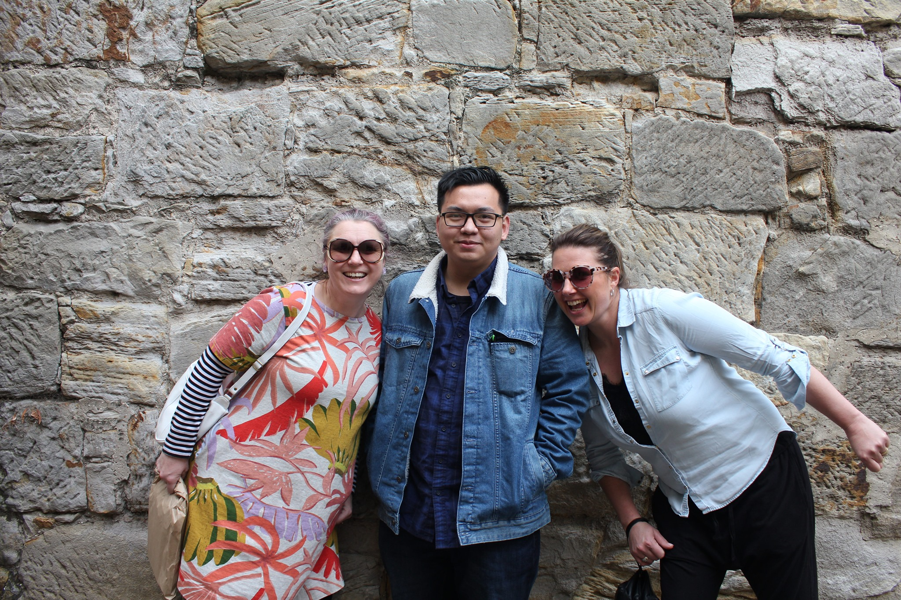
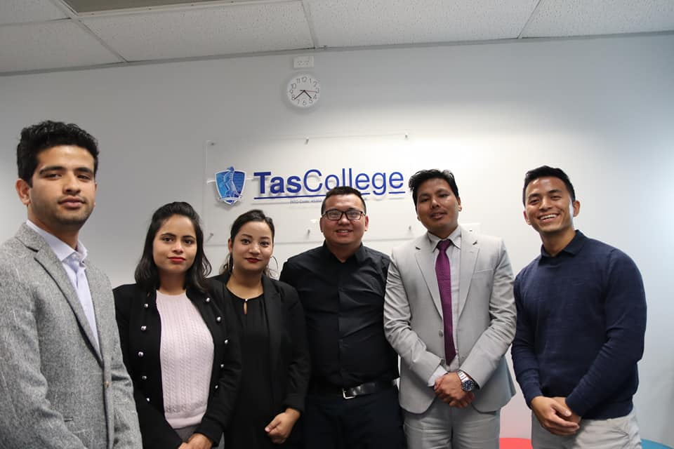

About Myself

I am a final-year Cyber Security student at Swinburne University of Technology, currently completing a Certificate IV in Cyber Security. I have a strong foundation in IT support, troubleshooting, and customer service, with effective verbal and written communication skills. I am seeking a Level 1 IT Support or IT Technician role where I can apply my technical problem-solving skills and contribute to a professional IT environment. I am passionate about IT and actively follow industry trends.
My Journey
My life in Tasmania:

I have had an amazing journey in the last 10 years in Australia. I started living in Melbourne briefly before moving to Tasmania. Compared to Melbourne, Tasmania is quieter and less crowded. But the Tassie people are friendly and helpful, similar to Melbourne people
Tasmania has historical value and tradition, based on the building architecture and people's culture. Tassie are proud of their coffee bean, farmed salmon and pies; though the older generation also enjoys Fish and Chip.

During 6 years in Tasmania, I studied and worked in the customer service area. I also volunteered to expand the network and improve communication skills. I had the opportunity to meet and learned from industrial experts and professionals. These experiences helped me acquire important transferable skills that can be applied in the technical area, such as information technology.
My other iconic moments in Tasmania:
My life in Melbourne:

After becoming an Australian citizen, I returned to Melbourne to pursue opportunities in IT technician and support roles. I enrolled in an Information Technology course at Swinburne University of Technology and am currently advancing my studies with a focus on Cyber Security.
During my studies, I joined the Cyber Security Club, where I had the opportunity to connect with talented individuals from diverse professional backgrounds. I also attended networking events to expand my professional network and gain valuable insights from industry experts in cybersecurity. These experiences broadened my perspective and deepened my understanding of how evolving cyber threats impact various sectors.
As a result, I am motivated to continually learn and enhance my skills in cybersecurity so I can better understand, anticipate, and defend against cybercriminal activities targeting businesses.
My other iconic moments in Melbourne so far:

© Portfolio created by Bill (Hoang Thong) Pham 2026